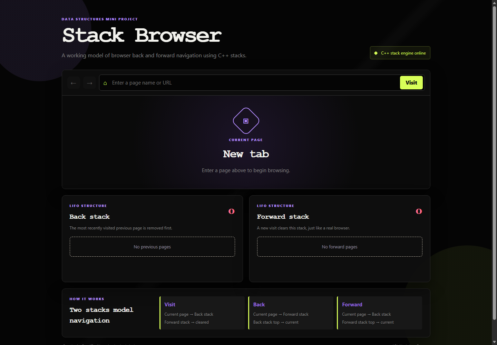

An interactive full-stack demonstration where the browser history state is managed by a C++ stack engine and displayed through a web interface.
Stack Browser models the behavior of a web browser's Back and Forward buttons with two last-in-first-out stacks.
When a user visits pages, the current page is stored in a history stack. Pressing Back moves the current page to a forward stack and restores the most recently visited previous page. Pressing Forward reverses that operation. A new page visit after going back clears the forward history, matching the normal behavior of a browser.
The project simulates navigation history using page names or URLs. It does not load external websites or replace the browser's native navigation. Its purpose is to demonstrate the underlying data structure and its operations clearly.
If the current page is A and the user visits B, page A is pushed onto the back stack. Page B becomes current. The forward stack is cleared because the user has created a new navigation branch.
Before: current = A, back = [...], forward = [C, D]
Visit B:
back.push(A)
current = B
forward.clear()
After: current = B, back = [..., A], forward = []
If the current page is B and the back stack top is A, the current page is pushed onto the forward stack. Then A is popped from the back stack and becomes current.
Before: current = B, back = [..., A], forward = []
Back:
forward.push(B)
current = back.top()
back.pop()
After: current = A, back = [...], forward = [B]
Forward is the reverse transition. The current page is pushed onto the back stack, then the top item of the forward stack becomes current.
POST /api/browser/action.execFile.| Layer | Files | Purpose |
|---|---|---|
| Core logic | browser_stack.cpp | State model, stack operations, input handling, JSON serialization. |
| Server | src/index.js | Static hosting, API validation, C++ compilation and execution. |
| Frontend | public/index.html | Browser-style layout, controls, and stack containers. |
| Styling | public/styles.css | Black theme, lime/violet accents, responsive layout. |
| Interaction | public/app.js | Fetch requests, state updates, rendering, HTML escaping. |
| Deployment | render.yaml | Render build command, start command, and health endpoint. |
The complete algorithmic behavior is implemented in browser_stack.cpp using standard C++17 libraries.
#include <iostream>
#include <string>
#include <vector>
struct BrowserState {
std::string current;
std::vector<std::string> backStack;
std::vector<std::string> forwardStack;
};
BrowserState groups all navigation information into one object. current stores the active page. backStack stores pages that can be reached with Back. forwardStack stores pages that can be reached with Forward.
The two vectors are used as stacks. push_back() adds a page to the top, back() reads the top, and pop_back() removes the top. These operations provide LIFO behavior.
One stack alone can remember previous pages, but it cannot support moving forward after a Back action. The second stack preserves the pages temporarily removed from the back stack. Each navigation direction has its own history.
| Variable | Type | Meaning |
|---|---|---|
current | std::string | Page currently displayed. |
backStack | vector<string> | Previous pages; last element is the Back top. |
forwardStack | vector<string> | Pages available after Back; last element is the Forward top. |
std::vector<std::string> split(const std::string& value) {
std::vector<std::string> result;
std::string item;
for (char character : value) {
if (character == '|') {
if (!item.empty()) result.push_back(item);
item.clear();
} else {
item += character;
}
}
if (!item.empty()) result.push_back(item);
return result;
}
The API passes a stack as a pipe-separated string such as Home|About|Contact. The split function scans one character at a time. On a pipe, the completed item is added to the vector and the temporary string is reset. The final item is added after the loop.
The server rejects page names containing a pipe, so the delimiter cannot make the state ambiguous.
std::string escapeJson(const std::string& value) {
std::string escaped;
for (char character : value) {
if (character == '\\' || character == '"') escaped += '\\';
escaped += character;
}
return escaped;
}
Page names can contain characters that have a special meaning in JSON. This function adds a backslash before backslashes and double quotes so the generated JSON remains valid.
void printArray(const std::vector<std::string>& values) {
std::cout << "[";
for (size_t i = 0; i < values.size(); i++) {
if (i > 0) std::cout << ",";
std::cout << "\"" << escapeJson(values[i]) << "\"";
}
std::cout << "]";
}
printArray serializes a C++ vector into a JSON array. The comma condition prevents a trailing comma, which would make the JSON invalid.
int main(int argc, char* argv[]) {
if (argc < 5) {
std::cerr << "Usage: browser_stack action current "
<< "backStack forwardStack [url]\n";
return 1;
}
const std::string action = argv[1];
BrowserState state{argv[2], split(argv[3]), split(argv[4])};
const std::string url = argc > 5 ? argv[5] : "";
std::string message;
The program receives the action and the serialized state as command-line arguments. At least four arguments after the executable are required: action, current page, back stack, and forward stack. A URL argument is needed only for a Visit operation.
if (action == "visit") {
if (url.empty()) {
std::cerr << "A URL is required for visit.\n";
return 1;
}
if (!state.current.empty()) state.backStack.push_back(state.current);
state.current = url;
state.forwardStack.clear();
message = "Visited a new page. Forward history was cleared.";
}
The current page is pushed before replacement, except when the application is on the initial empty tab. Clearing forwardStack is essential: a new visit creates a new history branch, so old forward pages are no longer reachable through normal browser navigation.
else if (action == "back") {
if (state.backStack.empty()) {
message = "Back stack is empty.";
} else {
state.forwardStack.push_back(state.current);
state.current = state.backStack.back();
state.backStack.pop_back();
message = "Moved to the previous page.";
}
}
The empty check prevents an invalid pop. For a valid Back operation, the current page is preserved in the forward stack, then the back-stack top becomes current and is removed.
else if (action == "forward") {
if (state.forwardStack.empty()) {
message = "Forward stack is empty.";
} else {
state.backStack.push_back(state.current);
state.current = state.forwardStack.back();
state.forwardStack.pop_back();
message = "Moved to the next page.";
}
}
Forward performs the mirror image of Back. The current page goes back into the back stack, and the forward top becomes current.
std::cout << "{\"current\":\"" << escapeJson(state.current)
<< "\",\"backStack\":";
printArray(state.backStack);
std::cout << ",\"forwardStack\":";
printArray(state.forwardStack);
std::cout << ",\"message\":\"" << escapeJson(message)
<< "\"}\n";
After the selected operation, the program prints one complete JSON object. The server reads this standard output and parses it. This keeps the C++ engine independent of the browser while providing a simple integration boundary.
{
"current": "About",
"backStack": ["Home"],
"forwardStack": [],
"message": "Visited a new page. Forward history was cleared."
}
else {
std::cerr << "Unknown action.\n";
return 1;
}
Only visit, back, and forward are accepted. An unknown action causes a non-zero process exit so the server can report an engine failure instead of returning a false success.
| Operation | Stack work | Time complexity | Effect |
|---|---|---|---|
| Visit | push + clear | O(F) with vector clear | Stores current page and removes forward history. |
| Back | push + top + pop | O(1) | Moves one page from back history to current and current to forward. |
| Forward | push + top + pop | O(1) | Moves one page from forward history to current and current to back. |
Here, F is the number of entries in the forward stack. The project uses clear() for a new visit, so clearing the forward vector is linear in its current size. Back and Forward are constant-time stack operations.
If there are N distinct stored history entries, the combined space used by the back and forward stacks is O(N). The current page uses O(1) additional space apart from its string length.
Back always returns to the most recently visited page that has not already been removed. That is exactly the Last-In-First-Out rule. The latest page is the first page removed, making a stack the natural data structure.
const express = require('express');
const cors = require('cors');
const path = require('path');
const fs = require('fs');
const { execFile, execFileSync } = require('child_process');
const app = express();
const port = process.env.PORT || 3000;
const root = path.join(__dirname, '..');
Express provides the HTTP server. CORS allows browser requests when the frontend and API are hosted separately. Path utilities create platform-independent paths. The child-process functions compile and execute the C++ engine.
app.use(cors()); app.use(express.json()); app.use(express.static(path.join(root, 'public')));
JSON middleware parses request bodies. Static middleware serves the HTML, CSS, and JavaScript files. This means one Render web service hosts both the API and the interface.
function ensureEngine() {
if (fs.existsSync(executable)) return;
try {
execFileSync('g++', [
'-std=c++17', '-O2', source, '-o', executable
], { stdio: 'pipe' });
} catch (error) {
throw new Error('The C++ stack engine could not be compiled.');
}
}
The server checks for the executable before every operation. In deployment, Render compiles it during the build command, while this fallback also allows a fresh local checkout to work automatically when a compiler is installed.
const { action, current = '', backStack = [],
forwardStack = [], url = '' } = request.body || {};
if (!['visit', 'back', 'forward'].includes(action)) {
return response.status(400).json({
error: 'Action must be visit, back, or forward.'
});
}
The server rejects actions outside the supported set. Visit also requires a non-empty page name or URL, and the current page must be a valid string. Stack items are filtered so only non-empty strings without the pipe delimiter reach the C++ process.
const argumentsList = [
action,
current,
cleanItems(backStack).join('|'),
cleanItems(forwardStack).join('|'),
];
if (action === 'visit') argumentsList.push(url.trim());
execFile(executable, argumentsList, { maxBuffer: 1024 * 1024 },
(error, stdout, stderr) => {
if (error) return response.status(500).json({
error: 'The C++ stack engine failed.'
});
return response.json(JSON.parse(stdout));
});
execFile passes arguments without invoking a shell, which is safer and avoids command-string parsing problems. The response is returned only after valid JSON has been parsed.
app.get('/api/health', (request, response) => {
response.json({
status: 'OK',
message: 'C++ browser stack engine is running'
});
});
Render uses this endpoint to determine whether the deployed service is healthy.
const state = {
current: '',
backStack: [],
forwardStack: []
};
The browser maintains a local copy of the latest C++ result so it can send complete state on the next action. The source of truth for each transition remains the C++ executable.
function renderStack(elementId, items, label) {
const element = document.querySelector(`#${elementId}`);
element.classList.toggle('empty', items.length === 0);
if (items.length === 0) {
element.textContent = `No ${label} pages`;
return;
}
element.innerHTML = items.map((item, index) =>
`<div class="stack-item">
<span>${escapeHtml(item)}</span>
<small>${index === items.length - 1 ? 'TOP' : ''}</small>
</div>`
).join('');
}
The last item is labeled TOP because the C++ vector uses its last element as the stack top. Empty stacks receive a clear empty-state message.
function escapeHtml(value) {
return value.replace(/[<>"']/g, character => ({
'&': '&', '<': '<', '>': '>',
'"': '"', "'": '''
}[character]));
}
Page names are user input. Escaping before assigning them to innerHTML prevents a page name from being interpreted as HTML.
const response = await fetch('/api/browser/action', {
method: 'POST',
headers: { 'Content-Type': 'application/json' },
body: JSON.stringify({ ...state, action, url })
});
const result = await response.json();
After a successful response, the client replaces its current page and both arrays with the returned C++ state. The UI then redraws button disabled states, counts, and stack cards.
The interface uses a black theme designed specifically for this project. It is intentionally different from the DFS Maze Lab visual language.

Figure 1. Interactive Stack Browser interface with current page, Back stack, and Forward stack.
Home and click Visit.About and click Visit.Contact and click Visit.| Technology | Use |
|---|---|
| C++17 | Browser history state transitions and stack data structure. |
| GNU g++ | Compiles browser_stack.cpp. |
| Node.js | Runtime for the web server. |
| Express.js | API routes and static frontend hosting. |
| HTML5 | Semantic interface structure and forms. |
| CSS3 | Black theme, responsive layout, and visual states. |
| JavaScript | API calls, state synchronization, and DOM rendering. |
| Render | Cloud deployment and health monitoring. |
| GitHub | Source control and deployment source. |
browser-back-stack-project/ ├── browser_stack.cpp # Main C++ stack engine ├── src/index.js # Express server and API bridge ├── public/ │ ├── index.html # Browser-style interface │ ├── styles.css # Black theme │ └── app.js # Frontend state and actions ├── render.yaml # Deployment configuration ├── package.json # Scripts and dependencies └── README.md # Setup documentation
cd D:\c++\browser-back-stack-project npm install npm start
Open http://localhost:3000. If port 3000 is already occupied, choose another port:
$env:PORT="3220" npm start
g++ -std=c++17 -O2 browser_stack.cpp -o browser_stack.exe
services:
- type: web
name: browser-back-stack
runtime: node
buildCommand: npm install && g++ -std=c++17 -O2 browser_stack.cpp -o browser_stack
startCommand: npm start
healthCheckPath: /api/health
No environment variables are required. Render installs the Node dependencies, compiles the C++ engine, starts the Express server, and checks /api/health.
The source is pushed to https://github.com/prashantiron2-lab/BACK_STACK on the main branch. Render can deploy directly from this repository.
| Test | Expected result | Result |
|---|---|---|
| Compile C++ engine | Executable created without compiler errors. | Passed |
| Visit Home from empty state | Current page becomes Home; stacks remain empty. | Passed |
| Visit About after Home | Home is pushed to Back. | Passed |
| Back from About | About moves to Forward; Home becomes current. | Passed |
| Forward from Home | Home moves to Back; About becomes current. | Passed |
| Visit after Back | Forward stack is cleared. | Passed |
| Back on empty stack | State stays safe and message is returned. | Passed |
| Forward on empty stack | State stays safe and message is returned. | Passed |
| Invalid API action | HTTP 400 validation response. | Implemented |
| Homepage and health endpoint | HTTP 200 response. | Verified locally |
Visit Home current=Home, back=[], forward=[] Visit About current=About, back=[Home], forward=[] Back current=Home, back=[], forward=[About] Forward current=About, back=[Home], forward=[]
The following questions and answers summarize the implementation and concepts used in the project.
back() and removed with pop_back().std::vector provides dynamic storage and efficient end operations while still clearly demonstrating stack behavior through LIFO methods. A custom stack class could be substituted without changing the algorithm./api/health to confirm that the Node server has started and is responding correctly.Stack Browser demonstrates how a simple abstract data type can model a familiar software feature. The two-stack design is small, efficient, and directly explains the behavior of Back and Forward navigation.
The project also shows how C++ algorithmic logic can be integrated into a web application without rewriting the core logic in JavaScript. Express provides the bridge, the frontend makes the state visible, and Render provides a public deployment path.
Repository: github.com/prashantiron2-lab/BACK_STACK